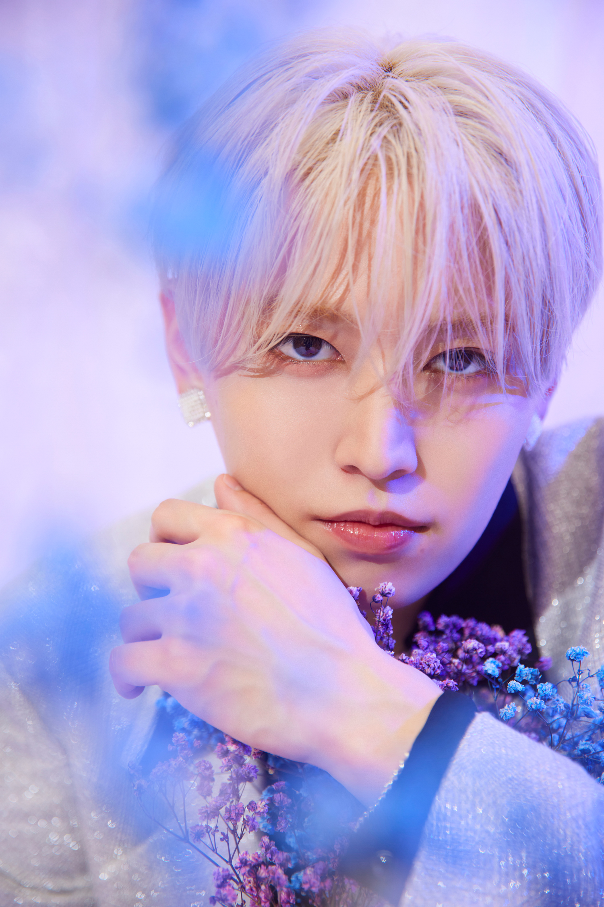

The Prince of White

👑 あなたを最高のお姫様にする👑
初めまして、瑠姫です。 せっかく出会えた時間だからこそ、 日常を忘れられるような 特別なひとときを届けたいと思っています。 あなたが笑顔で帰れることが、 僕にとって一番嬉しいことです。 今日はあなたを、 最高のお姫様にします。
✨ CUSTOMER VOICE ✨
「本当に王子様って存在するんだ… と思いました。 優しさも気遣いも完璧でした。」
「特別扱いされている感じがして、 夢みたいな時間でした。 また絶対会いたいです。」